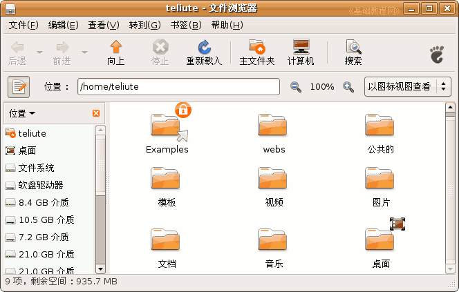
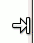
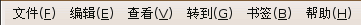
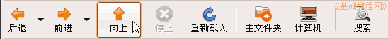
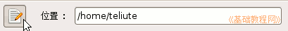
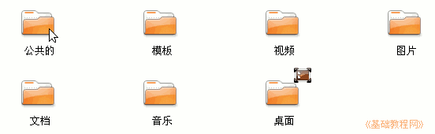
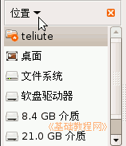

电脑操作基础
作者：TeliuTe 来源：基础教程网
二、认识窗口 返回目录 下一课Ubuntu(班图)的桌面版中，会用到许多窗口，这一节我们来认识窗口的组成，下面我们来看一个练习，
点上面板条的菜单“位置”菜单，在出来的菜单里点第一个“主文件夹”，打开一个窗口；

1、窗口组成
1）边框 每个窗口都有四个边，将鼠标移到边上，指针会变成一个箭头和一个竖线，这时拖动就可以改变窗口的大小；
2）标题栏 每个窗口的最上边是一个黄色的长条，这就是标题栏，中间是窗口的名称和所打开的程序，
最右边的三个按钮分别是最小化、最大化和关闭按钮，
点击可以改变窗口大小，拖动标题栏可以移动窗口的位置；
3）菜单栏 标题栏下边是菜单栏，点击左键可以出来一个下拉菜单，里面有许多菜单命令，

记住“文件”里面的保存命令，“编辑”里面的复制和粘贴命令；
4）工具栏 菜单栏的下边有一排按钮，用图标和文字表示，操作起来很方便，常用的是左边三个，后退和向上按钮；
5）地址栏 在工具栏下面是一个长条文本框，这儿是地址栏，表示现在所在的文件夹位置，
点击左边的铅笔图标可以显示名称路径；

6）工作区 窗口中间的空白区域就是工作区，里面可以放文件和文件夹，
主文件夹里放有 文档、图片、音乐等文件夹，自己还可以新建；

7）滚动条 在窗口的右侧和底边有时会出现一个长条，上下是两个黑三角箭头，这就是滚动条，
单击黑箭头或者拖动滚动条，窗口下面的内容就会显现出来；
8）常用位置 在窗口左侧，显示了一些其他常用的文件夹，点击左上角的“位置”按钮，可以切换到其他方式；

练习：
1、打开“主文件夹”，瞄准标题栏把它拖到右边，再移到中间，最小化窗口、最大化窗口，然后再还原；
2、记住窗口的各个组成部分的名称；
3、打开“主文件夹”窗口中的“Examples”范例文件夹，看一下窗口中的内容，单击工具栏上的“向上”按钮返回；
4、看一下地址栏中的内容，确定当前的位置，单击两边的按钮试试；
5、找一个窗口有滚动条的窗口，拖动一下滚动条，再单击上下的黑三角按钮看看有什么不同？
本节学习了Ubuntu的窗口知识，如果你成功地完成了练习，请继续学习下一课内容；本教程由86团学校TeliuTe制作|著作权所有，商业用途请与作者联系
基础教程网：http://teliute.org/
美丽的校园……
转载和引用本站内容，请保留版权信息和本站链接。